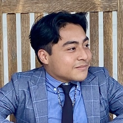

Introduction

How’s it going everyone, I am half way through my degree and I look forward to this class. Some interesting things about me are that I like to watch movies and anime, play video games mostly on PC, I am addicted to coffee and I have 3 dogs.
- Personal Background: I am Mexican but was born in SC and moved to NC while I was a year old and grew up here my whole life. I have 4 older brothers; I am the youngest at 20 years old.
- Professional Background: I have not had a professional job before although my mom has a small dog sitting company and I have helped out with that before.
- Academic Background: My goal is Full Stack Programming AAS, and this is my second year.
- Primary Computer: Apple, MacBook Air laptop, MacOS, Primary location at home on my desk.
- Courses I’m Taking, & Why:
- ENG231 - American Literature l: This is a general education requirement course for my AAS.
- CSC154 - Software Development: This is a major requirement; this course will teach me about the fundamentals of software development.
- WEB115 - Web Markup and Scripting: A major requirement, this course will teach me about JavaScript
- WEB250 - Database Driven Websites: A major requirement, this course would be useful to learn dynamic websites.
- Web215 - Adv Markup and Scripting: Major requirement, this will teach me to design internet applications and interactive web content.
“You have to be odd to be number one.”
- Dr. Seuss